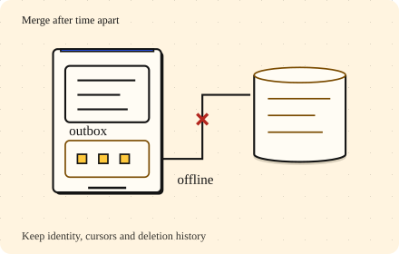

Go deeper · 7 minutes
Syncing across devices
Offline edits need durable local intent, a cursor and a plan for old devices.
Open this lesson
The note returns after you delete it
You delete a note on your phone. A laptop has been offline for a month and later uploads its old copy. Without a record of the deletion, the server may treat that copy as new. Sync is a protocol for reconciling histories, not just downloading the current rows.
Send changes, keep intent
Edit one note on two offline devices, delete another, then reconnect. Delta payloads carry the intent; concurrent versions need a visible resolution.
Worked example: a day of edits
These are payload sizes before metadata. Polling every minute permits up to 1,440 timer attempts a day, but the operating system may suspend or coalesce them. Timer firings do not measure radio wakeups. Push can prompt an authenticated delta fetch; it is not the durable delivery channel. Under-a-second freshness is a connected foreground target. Background delivery remains eventual.
One day on a phone
- Full refresh: 20 MB: 10,000 notes × 2 KB before metadata.
- Delta: 100 KB: 50 changed notes × 2 KB. About 200 times less payload.
- Push, then pull: A push is a wake-up hint. Durable authenticated sync still fetches the changes.
Keep deletions and expose conflicts
Validate upload epochs or reject unknown base versions even after tombstones expire. Otherwise a missing old identity can look new. Concurrent whole-note edits may become conflict copies; a text CRDT preserves more intent with extra metadata and testing cost. Show saved locally, syncing, synced and conflict separately. Bound batches, compress deltas, back off retries and consider Wi-Fi or charging policies for large attachments.
A deletion must outlive an offline copy
- 30-day offline horizon: Retain the tombstone and version history for supported returning devices.
- Device returns too late: Reject the old epoch and rebase from a fresh snapshot.
- Concurrent edits survive: Show conflict copies or merge deliberately. Do not silently replace either history.
Key numbers
- Full notebook
- ≈ 20 MB. 10,000 × 2 KB; metadata excluded
- Daily changed notes
- ≈ 100 KB. 50 × 2 KB; about 200 times less payload
- Minute polling attempts
- ≈ 1,440/day. 24 × 60 if allowed to run; actual wakeups depend on the OS and radio
Check your reasoning
Think through these questions before opening the lesson. In the game you can test the idea and compare your reasoning.
- A client persists its pull cursor before committing downloaded changes, then crashes. What can happen?
- Why is an on-device outbox necessary? Follow-up: the user closes the app just after an edit.
- A sleeping phone receives delayed push notifications. What promise can the sync protocol support?
- Can we delete tombstones after a week to cut storage? Follow-up: a laptop returns after a month.
- A device returns after its cursor and deletion history expired. How can it resume without reviving deleted notes?
The key point
Save intent locally, resume with stable ids and cursors, and keep enough history to merge safely.
Practise this idea
- Medium
One-to-one chat
People send short messages to each other from their phones. A message must arrive once, in order, even when the phone is on a bad connection and sends it again. If the other person is offline, the message waits and a notification goes out.
- Hard
Health readings from a wearable
A wearable records health readings even when its phone or cloud service is unavailable. Keep raw readings on the device when possible and upload only consented summaries in sparse batches. The system must not lose locally saved readings during a supported outage, and deleting an account must have a verifiable end-to-end workflow.
- Medium
Smart home
One million homes have a hub that keeps a live connection to your cloud. The hub reports its devices every few minutes, and the phone app sends commands like "lock the door". Commands must feel instant and must not be repeated. Once in a while a power cut ends and every hub reconnects together.
- Medium
File sync
A folder on your laptop mirrors to the cloud and to your other devices. Small changes must arrive quickly, big files must upload reliably, and a shared folder with thousands of people must not melt the metadata service.